Carino DICOM マニュアル
Carino DICOMはDICOMゲートウェイであり、継続運用のための アプライアンスです。検査を受信し、振り分けて転送し、保持しているものをクエリ/取得と DICOMwebで公開し、PACSやRISが応答しなくなっても画像診断部門の仕事を止めません。本マニュアルは、 導入、セキュリティモデル、すべてのサービス、そしてこのソフトウェアの実際の限界を扱います。
ここに載せているスクリーンショットはすべて、このソフトウェアが実際に動いているところで、掲載のために作った架空の検査を保持しています。本マニュアルに患者は一人も登場しません。
1. これは何で、どんな役割を担うのか
Carino DICOMは、画像を生み出す機器と、それを保存したり読影したりするシステムとのあいだに 立ちます。あなたのアーカイブを置き換えようとしているのではありません。それらをつなぐ部品であり、 そのどれかが倒れたときにも立っている部品であろうとしています。
役割は二つあり、この区別はどのサービスを有効にするかを決めるので重要です。
- 常設のゲートウェイ。C-STOREで受信し、患者 / 検査 / シリーズ別にディスクへ 保存し、ルールに従って一つまたは複数の送信先へ転送し、求められれば出ていくコピーを匿名化し、 保持しているものをクエリ/取得（古い機器のため）とDICOMweb（最近のビューアのため）で公開します。
- 安全網。プライマリPACSが応答しなくなったら、自前のModality Worklistを 立ち上げて技師が検査を続けられるようにし、障害の間に届いたものを保留し、 プライマリが戻ったら自動的に転送します。倒れたのがRISのほうであれば、MLLPで届く HL7オーダも、手入力のオーダも受け付けます。
すべては一つのconfig.jsonで動き、すべてヘッドレスで動きます。Webダッシュボードは
便利ですが、必須ではありません。
既定のポート
| サービス | ポート | プロトコル |
|---|---|---|
| 受信（Storage SCP） | 11112 | DICOM / DIMSE |
| 仮想プリント | 11113 | DICOM Print |
| Modality Worklist | 11114 | DICOM C-FIND |
| クエリ/取得 | 11115 | DICOM C-FIND/C-MOVE/C-GET |
| 緊急RIS | 2575 | MLLPで運ぶHL7 |
| ダッシュボード + DICOMweb | 8042 | HTTP |
なぜ104ではなく11112なのか。DICOMの登録済みポートは104ですが、これはLinuxと
macOSでは特権ポートでrootを必要とします。既定値はそれを避けています。機器の設定をこれに合わせるか、
コンテナかファイアウォールで104を11112へ公開してください。
2. はじめかた
動かす形を選ぶ
| 形 | 向いている場面 | 停電のあとに自分で戻るか |
|---|---|---|
| デスクトップアプリ（トレイ） | 人が前に座っているPC。検査室ひとつ、診療所ひとつ、 お試しの評価。 | 「ログイン時に起動」を設定した場合のみ |
| Docker / Podman | サーバー、あるいは隔離してまるごと移せる状態にしておきたい PC。 | 戻る（restart: unless-stopped） |
| systemdサービス | 画像診断部門の隅に据え置く常設のPCで、誰もログインして いないもの。 | 戻る |
デスクトップアプリ
お使いのOS向けのパッケージを リリースの ページからダウンロードして開いてください。システムトレイに収まり、クリックするとダッシュボードが 開きます。まだコード署名をしていないため、WindowsとmacOSは初回起動時に警告を出します。それでも開くための 正確な手順はトップページにあります。
Docker
git clone https://github.com/MiguelCarino/Carino-PACS
cd Carino-PACS
mkdir -p data && sudo chown -R $(id -u):$(id -g) data
docker compose up -d
docker compose logs -f pacs初回起動でアクセストークンを生成し、ログに出力します。
http://127.0.0.1:8042/を開き、ダッシュボードに尋ねられたら貼り付けてください。設定、
検査、ログ、索引 — すべては./dataにあり、バックアップすべきなのはここです。
初回起動でいちばん多い失敗は、./dataの所有者がrootになっていることです。
コンテナは決してrootでは動かないので、EACCESで終了します。お使いのアカウントが
uid 1000でない場合は、PACS_UIDとPACS_GIDを.envファイルに
書いて再ビルドしてください。SELinuxのホスト（Fedora、RHEL、Rocky）では、ボリュームの
:zという接尾辞は飾りではありません。これがないと、所有権は完全に正しく見えるのに
バインドマウントに書き込めません。
systemdサービス（Linux）
git clone https://github.com/MiguelCarino/Carino-PACS.git
cd Carino-PACS
sudo packaging/systemd/install.shインストーラはcarino-pacsというシステムユーザーを作り、コードを
/opt/carino-pacsへコピーし、/var/lib/carino-pacsを用意し、ユニットを
設置します… そして起動はしません。これは手落ちではありません。PACSを起動することは
患者データを受け付ける待ち受けを開くことであり、その判断は設定を読んだあとに下すものです。読む前ではありません。
/var/lib/carino-pacs/config.jsonを編集してから、次を実行してください。
sudo systemctl enable --now carino-pacs
systemctl status carino-pacs
journalctl -u carino-pacs -fインストーラを再実行すると、コードはその場で更新され、既存のconfig.jsonには決して
触れません。
データの置き場所
| 形 | ディレクトリ |
|---|---|
| デスクトップ / CLI | ~/CarinoDICOM/（既存のインストールは ~/CarinoPACS のままです） |
| Docker | コンテナ内の/data → ホストの./data |
| systemd | /var/lib/carino-pacs/（モード0750） |
config.jsonは/etcではなくデータと一緒に置かれます。設定の中の
相対パス（"./received"、"./logs"、"./index.db"）は、設定
ファイル自身が置かれているディレクトリを基準に解決されるからです。/etcに設定を置けば、
患者の検査が/etcじゅうに散らばることになります。
初回起動、順番どおりに
- サービスを選びます。すべてオフの状態で出荷されます。ダッシュボードの初期設定の 画面が、このPCは何を動かすべきかを尋ねるので、それだけを有効にしてください。
- 送信先を追加します（名前、ホスト、ポート、AE title）。場所は設定一式の 送信先タブで、その行を開くと最初に出るタブです。
- C-ECHOで疎通を確かめます。画像を1枚も動かす前に:
./run.sh echo --name "Hospital PACS"。C-ECHOが通らないなら、問題はCarinoでは ありません。ネットワークか、ファイアウォールか、AE titleです。 - 機器を1台こちらへ向けます。受信のAE title、IP、ポートを使って設定し、テストの 検査を送ってください。
- アクティビティのログを見ます。アクティビティのログタブです。 何かが失敗すればそこに出ます。このソフトウェアは、黙って失敗するより声を上げるほうを選びます。
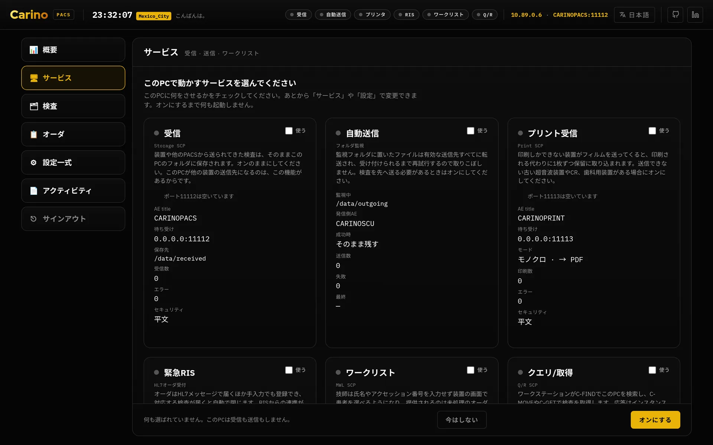
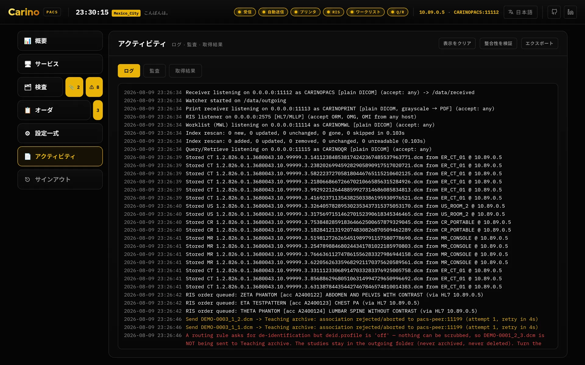
ヘッドレスで動かす
./run.sh init # config.json とそのフォルダを作る
./run.sh init --token # あわせて web.auth_token を生成する
./run.sh serve # ダッシュボードを http://127.0.0.1:8042 で
./run.sh receive # 受信だけ
./run.sh send # フォルダ監視 / 転送だけ
./run.sh qr # クエリ/取得だけ
./run.sh mwl # ワークリストだけ
./run.sh ris # HL7オーダの受信だけ
./run.sh print # 仮想プリンタだけ
./run.sh echo --host 10.0.0.5 --port 104 --aet REMOTEPACSどのコマンドも-c / --config <path>を受け付けます。Windowsでは
run.ps1です。
3. セキュリティモデルとトークンのルール
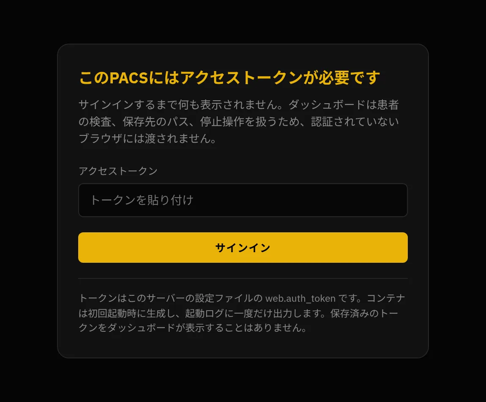
まず要となる点から。ダッシュボードはアーカイブの鍵です。これを開ける人は、保存されて いるすべての検査を読み、DICOMファイルをダウンロードし、あらゆる設定を変更し、サービスを開始・停止し、 検査を削除し、サーバーを停止できます。初期状態では共有の秘密がひとつあるだけで、それを持つ人は何でも できます。プロファイルは任意で、有効にするまではオフです。有効にすれば、各自が自分と してサインインし、自分の権限、自分に見える患者の識別情報、そして監査証跡に残る自分の名前を持ちます。 共有トークンは管理者として動作し続けるので、すでにそれを使っている仕組みが壊れることはありません。
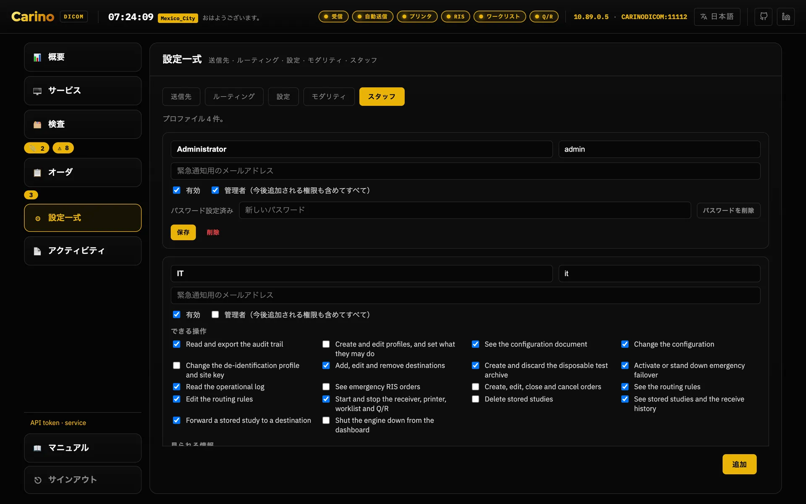
***と表示されます。権限はダッシュボードが何を描くかも決めます。プロファイルに見えるのは、その権限に見合うサイドバーの
行と、その中のタブだけです。routing.readを持ちconfig.readを持たない放射線科医
には、送信先とルーティングのある設定一式が見え、設定タブはありません。
そのどれも持たない受付には、設定一式の行そのものがありません。上部ヘッダのサービスチップは
意図的な例外です。下のWebダッシュボードを参照してください。
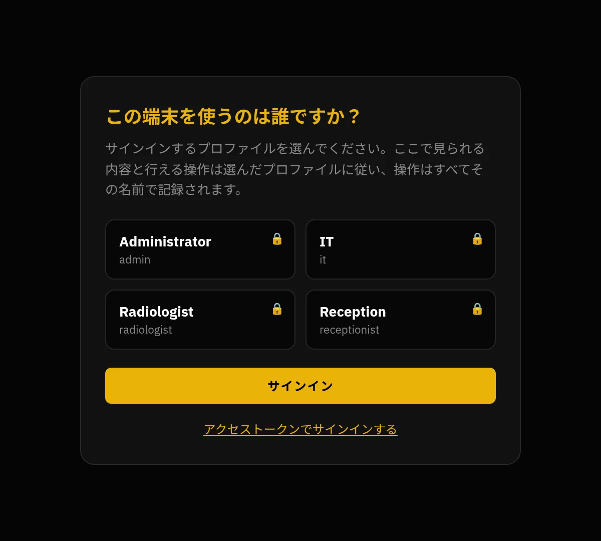
users.list_profilesがオンのあいだだけです。そのポートに到達できる人へスタッフの一覧を公開するのは本物の情報開示であり、判断はあなたに委ねられています。トークンは下に畳まれて今も使えます。誰かが自分を締め出したときの、戻り道だからです。ルール
web.auth_tokenが空であってよいのは、web.hostがループバックのあいだ
だけです。web.hostがそれ以外 — 0.0.0.0、LANのアドレス、ホスト名 — で
トークンが空なら、サーバーは起動を拒否します。この拒否は、迂回すべきエラーでは
なく、機能です。
理由は具体的です。127.0.0.1で認証なしのとき、アクセス制御を担っているのはOSです。この
PC上のプロセスだけがAPIに到達できます。それは筋が通ります。しかしweb.hostは運用者が
変更できる値で、誰かが「向こうのPCから入れるように」と0.0.0.0に書き換えた瞬間 — 急いで
いて、火曜日で、セキュリティのことなど考えずに — その同じAPIは、LANの隣人の誰にでも検査の一覧、保存先の
パス、DICOMのバイト列、そして/api/shutdownを差し出します。この変更が10秒で済み、その結果が
何年も続くからこそ、このルールがあります。
コンテナは常にその状況にあります。コンテナは仕組み上0.0.0.0で公開する
からです。そのためイメージは、こちらがトークンを渡さなければ初回起動で256ビットのトークンを生成し、
それを出力します。決してしないのは、黙って生成することです。誰も見ていない秘密は、誰も更新
しない秘密です。
トークンの生成と渡し方
./run.sh init --token # config.json に書き込む
python3 -c "import secrets; print(secrets.token_urlsafe(32))"
openssl rand -base64 32サーバーは次のいずれの形でも認証情報を受け付けます。
Authorization: Bearer <token>X-Carino-Token: <token>POST /api/loginが発行するセッションクッキー
クッキーがあるのは、ダッシュボードがトークンを尋ねるのを一度きりにするためです。 JavaScriptの中に持ち続ければ、あらゆるXSSとあらゆるブラウザ拡張がそれを読めます。クッキーがトークンを 運ぶことは決してありません。運ぶのは、起動時に生成してメモリ上だけに置いた秘密によるHMACです。だから 再起動すると全員がサインアウトします。運用者が一人のアプライアンスには、これが妥当な割り切りです。ディスク上に セッションの保管場所はなく、漏れるものもなく、最悪でも1シフトに一度トークンを打ち直すだけです。
ダッシュボードは平文のHTTPで通信します。Web層には組み込みのTLSがありません。ループバックの 外へ公開するなら、HTTPSを終端するリバースプロキシの後ろに置いてください。共有ネットワークで平文の HTTPに載せて送ったトークンは、渡してしまったトークンです。
DICOM側
allowed_aets— 発信側のAE titleの許可リストです。空欄は「誰でも 受け付ける」を意味します。これは有用なフィルタであって、認証ではありません。DICOMは呼び出し元を 認証しません。- DICOM-TLS — 送受信の両側で、それぞれ独立に使えます。クライアント証明書による
相互TLSも含みます。使うのは同じポートです。平文の相手はTLSの受信とは話せず、その逆も同じ
です。TLSが暗号化し認証するのはトランスポートであってアプリケーションでは
ありません。本当のアクセス制御には
allowed_aetsやクライアント証明書と組み合わせて ください。 - ファイアウォール — DICOMの待ち受けは既定で
0.0.0.0にバインドします （とはいえ、どの待ち受けも有効にするまではオフです）。モダリティが到達しなければならないものとして それは正しく、そしてモダリティのサブネットに限定するのはあなたの仕事だということでもあります。
このモデルが守らないもの
- プロファイルは、有効にするまではオフです。それまではアプライアンス全体に共有の 秘密がひとつあるだけで、アカウントも、役割も、権限もありません。それでも既定はこのままです。 アップグレードの際に黙って有効化すれば、その施設で機械が使っているクライアントがすべて壊れる からです。
- ディレクトリ連携はありません。アカウントはアプライアンスの中にあります。LDAPも、 Active Directoryも、シングルサインオンもなく、退職した人を中央で無効化する手段もありません。
- 監査証跡は切り詰められることがあります。その場で書き換えられた記録、途中から 取り除かれた記録、並べ替えられた記録、行の途中で切られたファイル — どれもダイジェストを壊すので、 整合性を検証がその記録と理由を名指しします。検出できないのは末尾のいくつかの記録が削除された 場合です。残っているものが本当に妥当なチェーンになるからです。また、監査フォルダへの書き込み権限を持つ人に よる全面的な書き換えを止めることもできません。否認防止が必要なら、チェーンの先端をこのPCが書き込めない 場所へ写しておき、あとで突き合わせてください。
- 保存時の暗号化はありません。検査はふつうのDICOMファイルで、sqliteの索引は氏名と
識別子を平文で持ち、オーダはJSONで、
config.jsonはトークンを平文で持ちます。下にある ボリュームを暗号化し（LUKS、BitLocker、FileVault）、データディレクトリの権限を絞ってください。 - HL7/MLLPの受信にはTLSも認証情報もありません。MLLPのフレーミングを載せたTCPの
ソケットです。唯一の制御は
allowed_hostsで、これは接続元アドレスの確認であり、したがって なりすませます。そのポートに接続を開ける人は、誰でもワークリストに現れるオーダを注入できます。信頼 できる臨床ネットワークにバインドし、ファイアウォールで囲ってください。 - 匿名化はピクセルに触れません。下のそのサービスを参照してください。焼き込まれた 患者情報は、どのプロファイルを使っても残ります。
バックアップ。sqliteの索引はキャッシュで、自分で作り直せます。画像はそうではありません。 保存先のディレクトリをバックアップし、そして少なくとも一度は復元を試してください。
テレメトリはありません。Carino DICOMはどこへも何も送りません。解析も、クラッシュレポートも、 更新確認も、実行時に取ってくる第三者のスクリプトもありません。外向きの接続は、あなたが設定した DICOMのアソシエーションとHL7の応答だけで、接続先はあなたが名指しした相手だけです。それを破るような 変更は、脆弱性として扱われます。
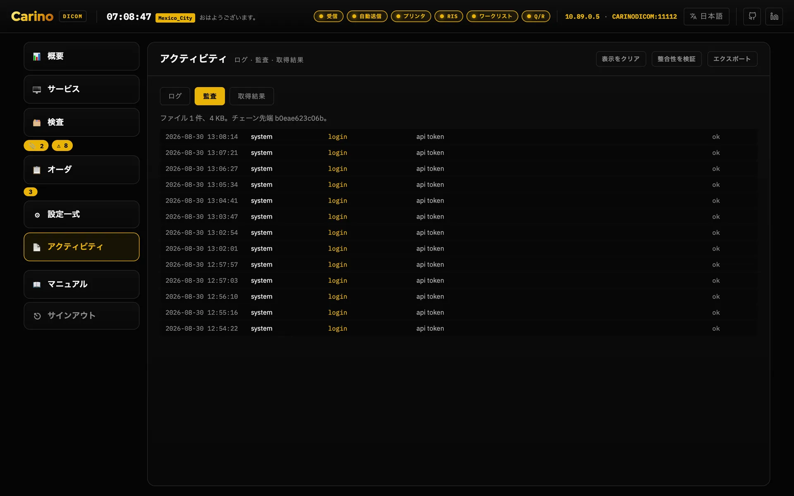
4. サービス、ひとつずつ
ポートを開くものはすべてオフの状態で出荷されます。正しい問いは「何ができるか」ではなく「このPCは何をする必要があるか」です。オンにしたサービスが増えれば、開いたポートもその分だけ増えます。下記の索引だけが唯一の例外で、これは何も待ち受けないローカルのsqliteキャッシュなので、自動的に起動します。
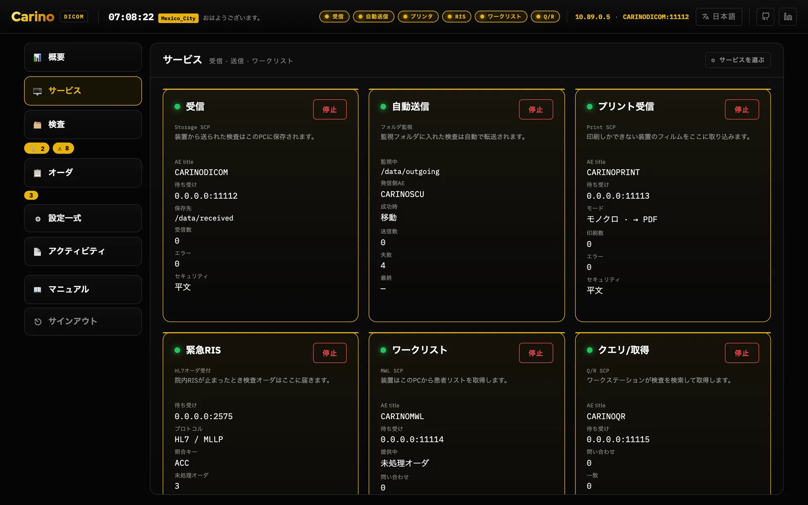
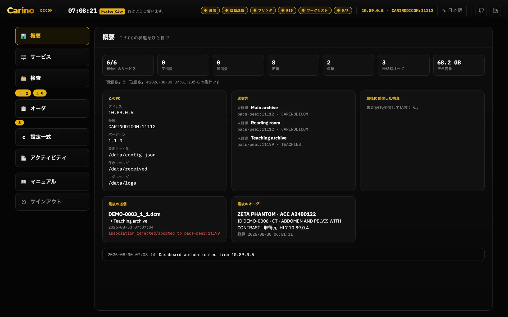
受信 — Storage SCP
ポート11112 · C-STORE、C-ECHO
- できること
- モダリティから送られてきた検査を受け取り、ディスクに保存します。患者 / 検査 / シリーズ別に整理することもできます。すべての転送構文を受け付け、圧縮されたオブジェクトはそのまま保存します。トランスコードは行わないため、入ってくる途中で何かが変えられることはありません。
- オンにする場面
- ここへ画像を送信するものがある場合です。モダリティ、他のPACS、ワークステーションなど。これが中心となるサービスです。
- オフのままでよい場面
- このPCが、他の何かがフォルダに置いたものを転送するだけの場合です。
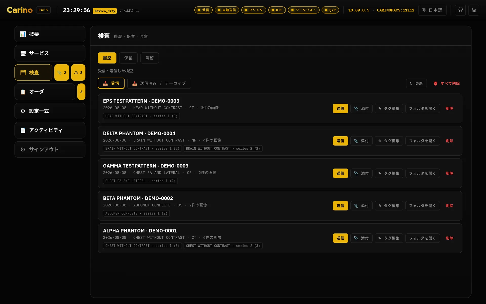
自動送信 — Storage SCUとルーティングルール
外向きクライアント · C-STORE
- できること
- フォルダを監視し、新しいファイルを該当するすべての送信先へ転送します。ファイルが送られるのは安定している（2回のスキャンでサイズが変わらない）と判断されてからなので、書き込み途中のファイルが転送されることはありません。進捗は送信先ごとに管理され、有効なすべての送信先が受け取って初めて完了として数えられ、失敗したホストは次のスキャンで再試行されます。成功したら、元のファイルはそのまま残す・移動する・削除するのいずれかを選べます。
- ルール
- ルーティングを有効にすると、ルールがモダリティ、発信側 AE title、ステーション、患者ID、検査説明で送信先を選びます（
*と?のワイルドカードは大文字小文字を区別しません）。例:ER_*からのCTを匿名化して教育用アーカイブへ。 - 保証すること
- 検査がどこにも送られずに終わることは絶対にありません。ルーティングがオフ、一致するルールがない、ヘッダが読めない、もう存在しない送信先を名指ししているルール — そのどれもが、有効なすべての送信先へ送るという動作に戻ります。送りすぎは運用者を煩わせますが、送り足りなければ画像が失われます。
- 唯一の例外
- ある送信先について匿名化を要求しているルールがあり、その除去を実際には実行できない場合、その送信先は保留されます。識別可能なまま送るのではなく、そこへは一切送信しません。除去を止める原因は、プロファイルが
offであること、またはプロファイルはオンでも現在の設定から匿名化処理を構築できないことで、対処はそれぞれ異なります。どちらの場合も失われるものはありません。下の転送時の匿名化を参照してください。 - オンにする場面
- このPCが画像を先へ届ける必要がある場合です。中央のPACSへ、読影用のワークステーションへ、あるいは教育用アーカイブへのコピーとして。
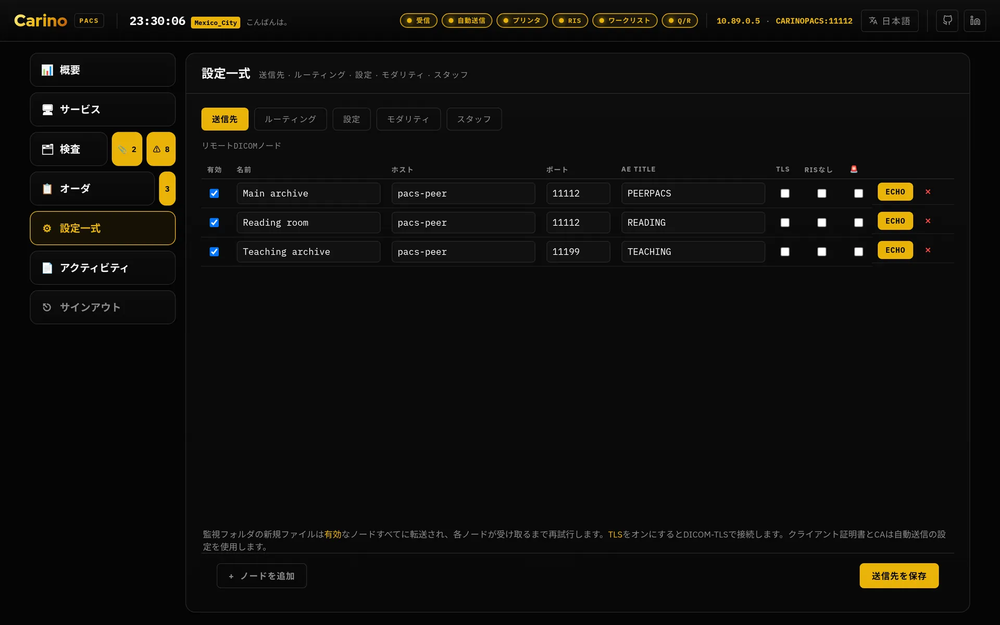
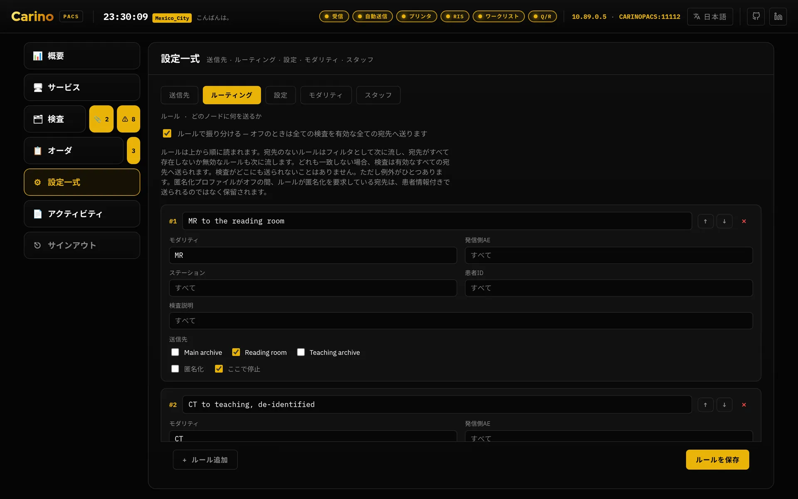
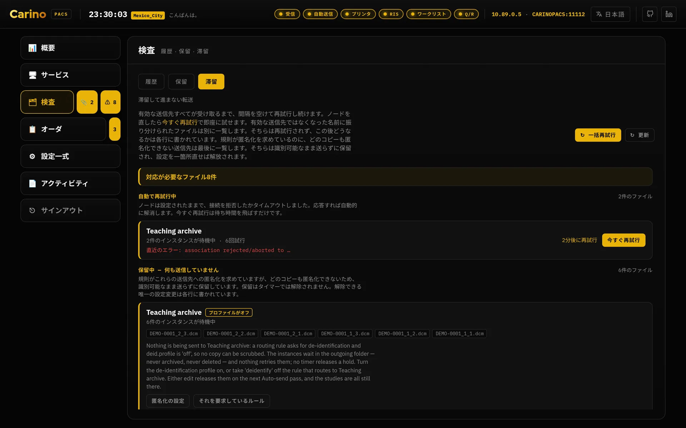
転送時の匿名化
PS3.15 Annex Eのプロファイル · 出ていくコピーにのみ適用
- できること
- 送信されるオブジェクトにBasic Application Level Confidentiality Profileを適用し、どの保持オプションを使ったかを
(0012,0064)に明記するので、受け取った側は何が残されたかを確認できます。アーカイブされた原本が書き換えられることは絶対にありません。この非対称こそが要点です。 - プロファイル
basicは日付（そのまま、またはシフト）、患者の身体的特性、機器の識別情報、施設の識別情報を保持します。strictは機器と施設の識別情報を落とし、保持を指定していてもプライベートタグを削除します。- オンにする場面
- 画像が臨床環境の外へ出る場合です。教育、研究、ベンダー、外部へのセカンドオピニオンなど。
- オフにするとき
- そもそも除去を行うかどうかを決めるのはプロファイルで、どの送信先が除去済みのコピーを受け取るかを決めるのはルールの匿名化のチェックです。ルールがまだ匿名化を要求しているのにプロファイルを
offにすると、Carinoはその送信先を保留し、匿名化されたものしか受け取らないと伝えられているノードへ識別可能なコピーを送ることはしません。
保留されているのであって、送信されたのではありません — そして検査が動かなくなったときの答えはこれです。ルールが匿名化を指定している送信先は、その除去を実際に実行できない限り、何も受け取りません。配信は先送りされますが、識別情報は開示されません。ディスクで待っている検査は設定を直せば解放されますが、外部のノードに届いてしまった氏名は、どんな設定変更でも取り戻せません。
除去が起きない理由には種類があり、直し方は同じではありません。どの保留にもそのどちらであるかが記録され、検査の滞留タブは、推測ではなく記録された原因に対応する対処を表示します。
- プロファイルが
offなのに、ルールがまだ除去を要求している場合です。プロファイルをbasicかstrictにすれば、次の自動送信で解放されます。 - プロファイルはオンでも、現在の設定から匿名化処理を構築できなかった場合です。この場合も除去に使えるものがありません。それを止めた失敗はアクティビティのログタブの送信のチャンネルに出ているので、そちらを直してください。プロファイルをオフにしてもこちらは解放されません。何も解放されず、除去を止めている側が入れ替わるだけです。
ルールの匿名化のチェックを外せばどちらの保留も解放されますが、検査は識別可能なまま解放されます。それは、この保留が防ぐために存在している、まさにその結果です。その送信先が本当にもう匿名化されたデータを受け取る対象ではない場合にのみ、この変更を行ってください。
どの変更が正しいにせよ、それは保留を報告している行からワンクリックです。保留された各行には、設定一式の設定タブを開く匿名化の設定ボタンと、ルーティングタブを開くそれを要求しているルールボタンが付いています。どちらもタブを開くだけで、除去を要求しているルールまでスクロールすることも、それを強調表示することもありません。それでも、問題を示している行が、それを直す両方の場所への入口になっているので、それぞれをサイドバーの行から探していたころより、直すまでの手数は少なくなっています。
失われるものはなく、黙って起きることもありません。検査は送信フォルダに残り、アーカイブも削除もされません。同じ検査の他の送信先には引き続き届きます。アクティビティのログタブは、検査、送らなかった送信先、その原因を挙げたエラーを出します。設定タブの匿名化のフィールドセットもそれを示し、検査の横の⚠バッジがそれらのファイルを数えます。そしてそのバッジ自体がボタンで、滞留タブを開きます。保留が独りでに解除されることはありません。時間切れを進めるタイマーもなければ、再試行するものもありません。
ピクセルはきれいにしません。画像に焼き込まれた患者情報 — 超音波やSecondary Captureがフレームの中に印字するバナー — は、ここのどのプロファイルを使っても残ります。そしてそれこそが、「匿名化済み」のデータが氏名を付けたまま病院の外へ出ていく、最も多い経路です。Clean Pixel Dataのオプション（113101）は、実際に行っていないので意図的に宣言していません。この漏えいをプログラムの内部から検出することはできません。画像は人が見る必要があります。構造化レポート（Structured Report）の中の記述文も同様に読み取りません。
索引
sqlite · index.db
- できること
- 保存したファイルごとに1行を保持し、そこから患者、検査、シリーズの答えを導き出すので、検査の要約が、それがまとめているインスタンスとずれることは決してありません。クエリ/取得（Query/Retrieve）とDICOMwebの裏側にある問い合わせ層です。
- オンにする場面
- クエリ/取得やDICOMwebを使う場合です。どちらもこれだけに依存しています。
- 保証すること
- 索引はキャッシュであり、正ではありません。失っても再スキャンで済み、画像が失われることはありません。
クエリ/取得 — C-FIND、C-MOVE、C-GET
ポート11115 · Patient RootとStudy Root
- できること
- 他のシステムから「この患者の検査は何がありますか」と尋ね、続いて「こちらへ / あのワークステーションへ送ってください」と頼めるようにします。古い機器が実際に話せるのは、PACSのこちら側です。2009年の超音波装置やCRリーダーがDICOMwebを話すことは決してありませんが、DIMSEなら話せます。
- オンにする場面
- ワークステーションやモダリティがここから検査を取得する必要がある場合、あるいはプライマリPACSの障害の間、このPCが一時的なアーカイブとして働く場合です。
- 保証すること
- C-MOVEがインスタンスの一覧を勝手に作ることはありません。必ず索引を通して解決します。索引は知っているのにディスクから読み出せなかったものは失敗したサブオペレーションとして数えられ、Failed SOP Instance UID Listに名前が載ります。黙って落とすことは絶対にありません。一致した数より少ない画像しか送っていないのに成功を報告するC-MOVEは、このソフトウェアが起こしうる最悪の失敗です。
DICOMweb — QIDO-RS、WADO-RS、STOW-RS
HTTP、ダッシュボードのポートの/dicom-web配下
- できること
- 最近のビューア（OHIF、Weasisなど）が、DICOMのアソシエーションを交渉することなくHTTPで検索・取得・保存できるようにします。STOW-RSのアップロードはC-STOREと同じ保存処理を通るため、ビューアから投稿された検査は、モダリティが送ってきたものと区別がつきません。
- オンにする場面
- アーカイブに対してWebビューアを使いたい場合です。これらの経路もトークンが守っていることを忘れないでください。
- CORS
cors_originsは完全一致で照合され（スキーム + ホスト + ポート）、既定では空なので、一覧にないオリジンへ何かが返されることはありません。パターン構文はありません。ただしリテラルの*は有効で、それは運用者が自分でそう入力したからです。それ以降はすべてのオリジンに応答が返り、運用者が開いたどのページからでも、このPCのアーカイブを読めてしまいます。ビューアを名指しで指定してください。- できないこと
/rendered、/thumbnail、bulkdataのURI、転送構文どうしのトランスコードは実装しておらず、406を返します。中途半端に動くビューアは、機能がないことより悪いです。作れないものを偽ることは絶対にありません。
Modality Worklist（MWL）
ポート11114 · ワークリストのC-FIND
- できること
- 技師が患者情報を手入力しなくて済むよう、モダリティへオーダを提供します。各オーダには事前に生成されたStudy Instance UIDが入っていて、それが検査に焼き込まれるため、モダリティが返してくる検査はそのオーダと正確に突き合わせられます。オーダの対象装置のAEを設定すると特定のステーションだけに送られ、空欄ならすべてのステーションに表示されます。
- オンにする場面
- RISがモダリティに届いていない場合です。RISが止まっているから、その場所にそもそもRISがないから、あるいは実際のRISなしでRIS→PACSの流れを試すためです。
緊急RIS — HL7オーダ
ポート2575 · MLLPで運ぶHL7のORM^O01
- できること
- MLLPでHL7オーダを受信します。上流が何も生きていないときには、ダッシュボードから手入力することもできます。検査がC-STOREで戻ってくるとアクセッション番号（なければ患者ID）でオーダと照合され、オーダは完了し、証跡のためにアーカイブされます。消されることは絶対にありません。
- オンにする場面
- RISが止まっているとき、または連携をテストしているときです。
- 保証すること
- 画像の配信がオーダとの照合を条件にすることは絶対にありません。一致するオーダのない検査も、保存され転送されます。オーダは手作業で突き合わせるために未処理のまま残るだけです。
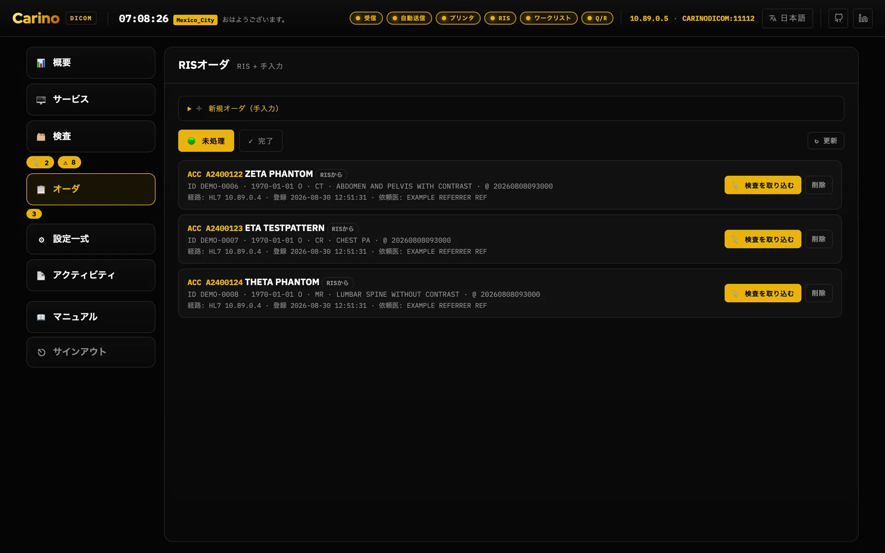
TLSも認証情報もありません。セキュリティの節を参照してください。そのポートにソケットを開ける人は、誰でもオーダを注入できます。信頼できる臨床ネットワークとファイアウォールを用意するか、さもなければ使わないでください。
緊急フェイルオーバー
プライマリに指定した送信先のC-ECHO監視
- できること
- 送信先をプライマリに指定して監視を有効化すると、Carinoが定期的にそこへC-ECHOを送り、転送の失敗も見ます。しきい値を超えて到達できないままなら、緊急RISを有効化するかどうかの確認が出ます。有効化すると、技師が検査を続けられるようローカルのワークリストを起動し、障害の間に受信した検査をすべて保留し、プライマリが戻ったら転送します。通常運用に戻すタイミングは運用者が決めます。
- オンにする場面
- このPCが、業務が依存しているPACSへのゲートウェイである場合です。本マニュアルの冒頭に「継続運用」という言葉があるのは、このためです。
仮想プリント（ダッシュボードのカード名はプリント受信）
ポート11113 · DICOM Print、PDF出力
- できること
- DICOMプリンタとして振る舞い、送られてきたものをPDFとして取り込みます。出力がフィルムしかない機器から、保管できるものを残すための手段です。
- オンにする場面
- 印刷しかできないモダリティがあり、その出力を救い出したい場合です。
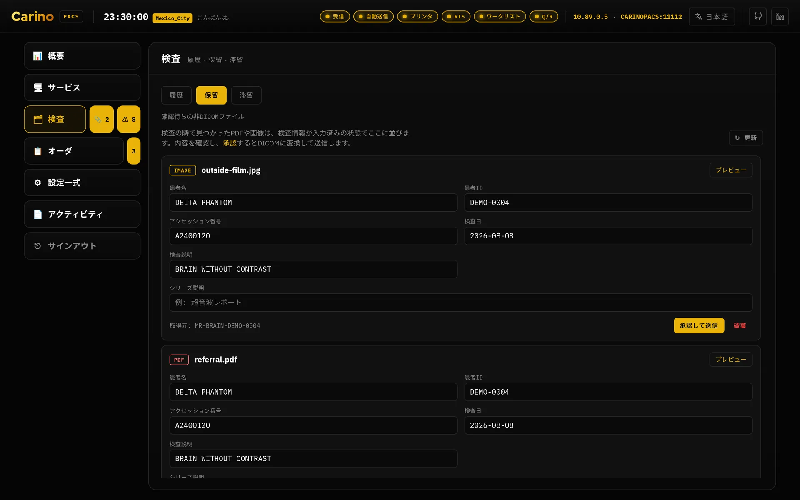
Webダッシュボード
ポート8042 · HTTP、既定は127.0.0.1
- できること
- サービスごとの状態、送信先、オーダ、リアルタイムのアクティビティのログ、設定、そして同梱のDICOMエディタです。ダッシュボードでできることはすべてCLIにもあります。
- 画面の構成
- サイドバーの行は概要、サービス、検査、オーダ、設定一式、アクティビティです。同じファイルの山に対して投げる問いが検査のタブで、履歴、保留、滞留です。機器を立ち上げるときに決めるものが設定一式のタブで、送信先、ルーティング、設定、スタッフです。開くのは設定ではなく送信先です。そして記録がアクティビティのタブで、ログと監査です。オーダは未処理と完了の独自の切り替えを持ちます。検査の行には、それ自体がボタンになっているカウンタ、📎保留と⚠滞留が付いていて、それぞれ自分のタブを開きます。つまり何かが滞留している間は滞留までワンクリック、何もないときは行、次にタブの二段階です。0という件数は自分を隠すからです。ずっと0を表示しているカウンタは鳴りっぱなしの警報と同じで、誰も見なくなります。オーダも同じ条件で自分の件数を持ちます。どのパネルにもタブにも固有のアドレスがあり —
#studies/stuck、#configuration/routing、#activity/logs— ダッシュボードの中の場所をブックマークでき、障害の間に電話で読み上げられ、ブラウザの戻るボタンで離れられます。古い#dlgStuck形式のリンクも今も解決します。概要だけは例外です。#overviewと入力すれば応じますが、アドレスバーに書き込まれることはなく、履歴も残しません。患者名を表示するため、無人の画面が再読み込みのあとそこへ戻ってはならないからです。 - ヘッダのチップ
- 上部に並ぶサービスチップは、サービスを開始・停止できる人にとってはこれまでどおりです。
services.controlを持たないプロファイルからも指標としては見えますが、操作は無効になっています。サービスの状態は機密ではなく — 受付でも受信が落ちていることを見られる必要があります — サーバーが拒否するスイッチを差し出しても意味がないからです。 - ループバック以外に公開する場面
- 具体的な理由があるときだけです。そのときはトークン（必須）とHTTPSを前段に置いてください。トークンのルールを参照してください。
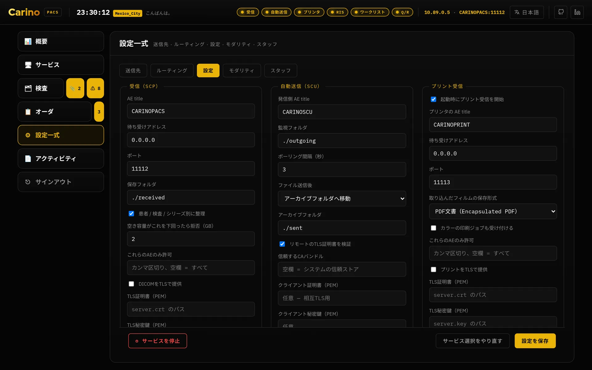
config.jsonにあるものすべてを、フォームにしたものです。正はファイルのままです。ここでの編集はファイルに書き込まれ、ダッシュボードが保存を拒否するような設定は理由とともに拒否され、黙って書き換えられることはありません。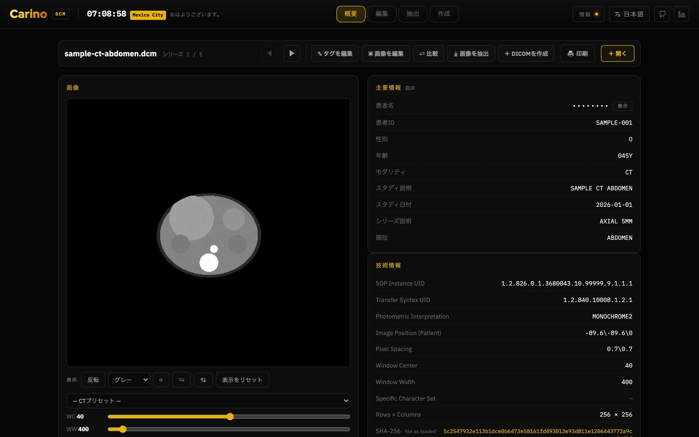
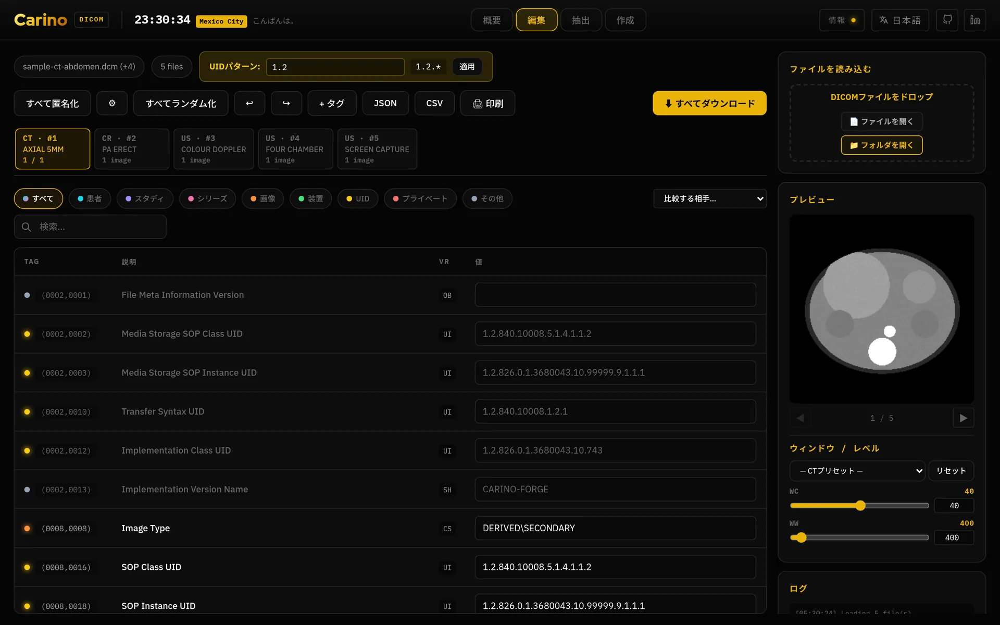
5. これは医療機器ではありません
Carino DICOMは医療機器ではありません。どの国のどの規制当局からも、認証・承認・登録を受けて いません。医療機器としてのCEマーキングも、FDAのクリアランスも、ANVISA、COFEPRIS、その他同等の機関 への登録もありません。臨床使用のバリデーションを実施した者もいません。
一次診断のためのものではありません。ここに診断用ビューアはありません。ウィンドウ調整も、 計測も、較正された描画経路も、表示に使うディスプレイの制御もありません。検査は、すでにお持ちの バリデーション済みのワークステーションで読影してください。
注釈にするより率直に書くほうが役に立つので、はっきり述べます。
- 導入するなら、バリデーションはあなたのものです。規制対応、リスクアセスメント、 データ保護、臨床上の責任は、これを本番に投入する組織にあり、プロジェクトにはありません。
- いかなる保証もなく配布されます。AGPL-3.0のライセンスが述べているとおりです。
- あなたのPACSやRISを置き換えるものではありません。これはその間に立つゲートウェイ であり、障害の間、両者が戻るまで部門の仕事を止めずにおくためのものです。
- それでも臨床インフラとして扱ってください。医療機器でないことは、無害であることを 意味しません。これは患者データを動かします。ボリュームの暗号化、ファイアウォール、TLS、トークン、 バックアップは任意ではありません。
- 患者の診療がこれに依存しているなら、その責任はあなたのものであって、このソフトウェアの ものではありません。
これは悲観ではありません。このプロジェクトは黙って届かない画像は、クラッシュより悪いという ことを真剣に受け止めています。だからこそ、起動を拒否し、失敗したサブオペレーションを明示的に数え、 送り足りないより送りすぎるほうを選びます。配信を差し止めるのはただ一つの場合だけで、それも声を上げ、 取り消せる形で行います。ルールが匿名化を要求している送信先で、約束された除去を実行できないとき — プロファイルがオフであるか、プロファイルはオンでも匿名化処理を構築できなかったときです。そのどちらで あるかを述べます。二つは直し方が違うからです。しかしソフトウェアが答えられるのは自分がすることまでで、 残りはあなたのものです。
6. ライセンスと相談先
Carino DICOMはAGPL-3.0-or-laterで公開されています。ネットワークサーバーであるため
§13が適用されます。改変版をサービスとして運用するなら、それを使う人々にソースを提供しなければなりません。
改変した配備にはLICENSEファイルと、ソースへの参照を残してください。
- GitHubの ソースとissueトラッカー
- セキュリティ ポリシー — 何が守られ、何が守られないか、そして脆弱性の報告方法
- 貢献の しかた
本マニュアルの誤り — あるいは放射線科医なら決して言わない訳 — を見つけたら、issueを立ててください。 日本語をはじめとする各言語のドキュメントは、おまけではなくプロジェクトの一部です。
Carino DICOM · トップページ · carino.systemsの工房の一部 · AGPL-3.0-or-later.